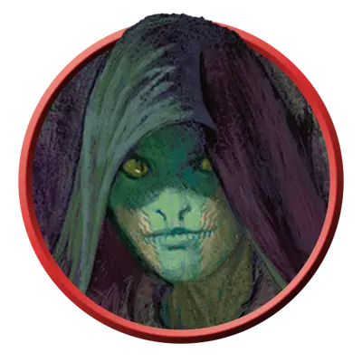

Юань-ти подражатель
Yuan-ti Infiltrator
Среднее Чудовище, Нейтральное Злое

Класс Защиты 11 Инициатива +1 (11)
Хиты 40 (9к8)
Скорость 30 футов
| мод | спас | ||
|---|---|---|---|
| СИЛ | 11 | +0 | +0 |
| ЛОВ | 12 | +1 | +1 |
| ТЕЛ | 11 | +0 | +0 |
| мод | спас | ||
|---|---|---|---|
| ИНТ | 13 | +1 | +1 |
| МДР | 14 | +2 | +2 |
| ХАР | 12 | +1 | +1 |
Иммунитеты Яд; Отравленный
Чувства Тёмное зрение 60 футов, пассивное Восприятие 14
Языки Общий, Бездны, Драконий
Опасность 1 (200 опыта; БВ +2)
Особенности
Сопротивление магии. Юань-ти подражатель совершает с Преимуществом спасброски от заклинаний и прочих магических эффектов.
Действия
Мультиатака. Юань-ти совершает две атаки Скимитаром.
Скимитар. Бросок рукопашной атаки: +3, досягаемость 5 фт. Попадание: 4 (1к6 + 1) Рубящего урона.
Ядовитый луч. Бросок дальнобойной атаки: +4, дистанция 120 фт. Попадание: 9 (2к6 + 2) урона Ядом.
Сотворение заклинаний. Юань-ти подражатель сотворяет одно из следующих заклинаний, не нуждаясь в Материальных компонентах (заклинательная характеристика — Мудрость, Сл спасброска заклинаний 12):
Неограниченно: Дружба с животными
2/день: Внушение
Бонус мастерства +2
Среда обитания Болота, Город, Леса, Пустыня
Сокровища Реликварные
Юань-ти
Жаждущие власти змеиные заговорщики
Заключая сделки с тёмными потусторонними силами, юань-ти обменивают свою человечность на смертоносность и хищное коварство змей. Из потаённых твердынь они манипулируют правителями и богачами, стремясь подчинить себе мир. Многие юань-ти владеют ядовитой магией, которая часто проявляется в виде змеиных клыков или разящих змей.
Юань-ти сохраняют человекоподобный облик, но с пугающими змеиными чертами в разных вариациях. У одних лишь редкая чешуя на коже, другие же — исполины, в которых от змеи больше, чем от человека. Как правило, чем больше в юань-ти змеиного, тем выше его положение среди сородичей.
Юань-ти могут всё больше становиться рептилиями в ходе опасных противоестественных обрядов. Совершите бросок по таблице «Преображения юань-ти» для вдохновения или определите сами, как именно юань-ти приобрёл свой змеиный облик.
Преображения юань-ти
| 1к6 | Юань-ти обрёл змеиный облик благодаря… |
| 1 | Сделке с пантеоном змеиных богов, продав часть души. |
| 2 | Проклятию, наложенному на его народ в далёком прошлом. |
| 3 | Яду грёз Мерршолка, дремлющего змеиного бога. |
| 4 | Экспериментам духовных наг или других юань-ти. |
| 5 | Ритуалу с использованием шкуры демонической змеи. |
| 6 | Испытаниям, избавляющим от человеческих «слабостей». |
Подражатели способны сойти за людей — их змеиные черты ограничиваются чешуйчатой кожей, раздвоенным языком и другими малыми, а то и внутренними переменами. Эти шпионы втираются в доверие к соперникам, манипулируют окружающими и открывают слабые стороны врагов для козней влиятельных юань-ти.